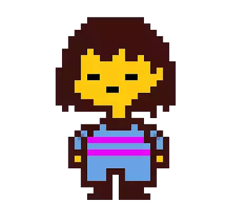

Olá, cidadãos insones e teóricos de sofá! Hoje, trago a vocês uma teoria que talvez faça sua avó parar de tricotar e
começar a questionar a realidade: quem é — de verdade — o Humano que Caiu?
Há alguns ciclos, um ser humano caiu em nosso mundo. Ninguém sabe de onde. Ninguém sabe por quê. Ele apareceu, confuso,
calado, com um olhar que podia ser tanto de dor quanto de cálculo frio. E desde então… as coisas começaram a mudar.
E agora, a pergunta que grita como um pato em chamas: ele é um pacifista iluminado ou um genocida disfarçado?
TEORIA 1: O PACIFISTA
Fontes semi-confiáveis (uma coruja com doutorado e um ancião que conversa com pedras) afirmam que o Humano é guiado por uma moral
inabalável. Ele evita conflitos, poupa inimigos e até dá segundas chances para criaturas que, honestamente, mereciam ser transformadas
em poeira cósmica.
TEORIA 2: O GENOCIDA
Mas... nem tudo são abraços e flores no bosque sangrento. Alguns registros indicam que o Humano, em outra linha do tempo (ou seria uma
"linha da morte"?), aniquilou tudo e todos. Sem hesitar. Com olhos frios como o fundo de uma geladeira sem luz.

|